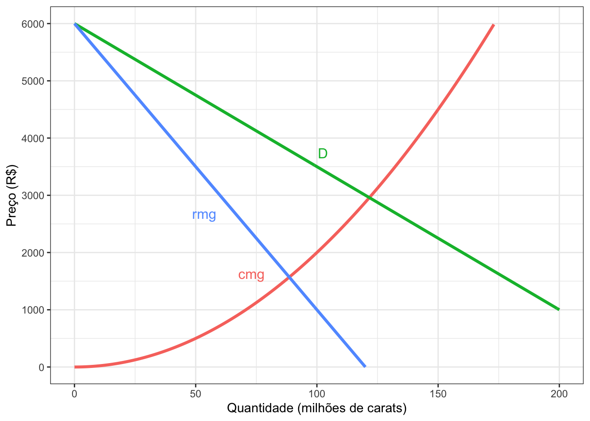
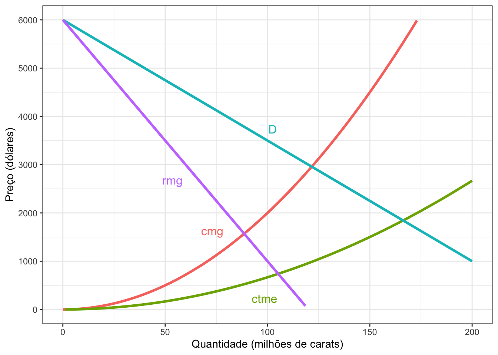

Tarefa 2 - Monopólio e competição monopolística

Foto de Carlos Esteves em Unsplash
A morte dos diamantes
Quanto você gastaria em um anel de diamantes para noivado? Se você respondesse em torno da média dos Estados Unidos de R$ 4.000, então você também foi vítima de uma das mais incríveis campanhas de marketing de todos os tempos. Um diamante é intrinsecamente inútil e, contra a crença popular, não são tão raros assim. Seu valor de revenda é próximo de nada.
Então, por que estamos dispostos a gastar tanto em um anel? Bem, podemos rastrear isso até o século XIX. Antes de 1866, os diamantes tinham sido raros, mas quando descobertas maciças foram encontradas na África do Sul, o diamante estava na beira da perda de seu valor. Foi quando Cecil Rhodes interveio e fundou a De Beers Corporation - consolidando as minas e restringindo o fornecimento, mantendo a ficção de que os diamantes eram escassos e tinham valor inerente.
A verdadeira mudança foi em 1938, quando a empresa contratou a N.W. Ayer para aumentar as vendas. Amarrando seu produto ao amor, e especificamente a uma proposta de casamento, até o final do século, mais de 80% de todas as noivas tinham recebido um anel de casamento com diamantes.
A campanha publicitária “Um diamante é para sempre” exibia um diamante como símbolo de amor, e sugeria que um homem deve gastar até dois meses de salário com o símbolo.
Monopólio
Até 1990, a DeBeers tinha um controle absoluto no mercado, em um determinado ponto representava 90% de todas as vendas, mas agora o controle do mercado está se afrouxando. Usando nossos modelos de monopólio e competição monopolística, vamos examinar os efeitos deste mercado em mudança.
Abaixo está uma representação da curva da demanda por diamantes. Suponha que a DeBeers esteja operando como um monopólio com a função de Demanda \(P=6000-25Q\)).

- Como monopolista, qual é o efeito total de uma mudança de preço de R$ 4.000 para R$ R$ 3.000 na receita da empresa? Use um gráfico para representar a mudanças em áreas.
Se você fizesse o exercício 1 para cada mudança marginal no preço, você encontraria a curva de receita marginal (RMg). A receita marginal é fornecida para os próximos exercícios, juntamente com o custo marginal (CMg) para a DeBeers.
A função de Receita Total é \(R = 6000Q - 25Q^2\) e a função do Custo Marginal é \(Cmg = 0,2Q^2\)
Com base na figura anterior, qual é a quantidade que a DeBeers deve produzir? Qual o preço que deve cobrar?
Qual é o excedente do Consumidor, excedente do Produtor e excedente do Mercado?
Qual é a perda de peso morto deste mercado?
Uma curva de Custo Total Médio (CTMe) é apresentada para a DeBeers. Estes custos incluem marketing, exploração mineira e outros.

- Quais são os lucros da DeBeers? Por que eles são capazes de sustentá-los no longo prazo?
Competição Monopolística
Dos anos 90 até agora, o mercado mudou consideravelmente, com a DeBeer tendo que se adaptar aos novos desafios.
O primeiro é a introdução de concorrentes diretos. A empresa estatal de diamantes russa ALROSA agora produz mais diamantes do que a própria DeBeers. Algumas novas empresas até compraram minas da DeBeers quando a empresa estava tentando equilibrar seu Balancete.
Outra mudança é a introdução de substitutos, com os diamantes sintéticos se tornando mais atraentes para os jovens compradores. Os avanços na produção desses produtos são bastante recentes, notadamente em 2015 a nova Tecnologia Diamantada mostrou o potencial dos sintéticos ao criar um diamante polido de dez carats.
Isto significa que o mercado está mudando de monopólio para competição monopolística. Sabemos que a entrada de outros farão com que a curva de demanda dos monopolistas mude.
Mostrar o efeito das mudanças se a nova função de Demanda é \(P=4700-25Q\), desenhe a nova curva de Demanda e a nova curva de receita marginal.
Neste novo cenário de concorrência monopolística, qual a quantidade que a DeBeers deve produzir? Qual o preço que eles devem cobrar? Desenhe
Quais são os lucros da DeBeers agora? Desenhe
Qual é a perda de peso morto em concorrência monopolística? Desenhe
Estas mudanças de mercado são boas ou ruins para os consumidores?